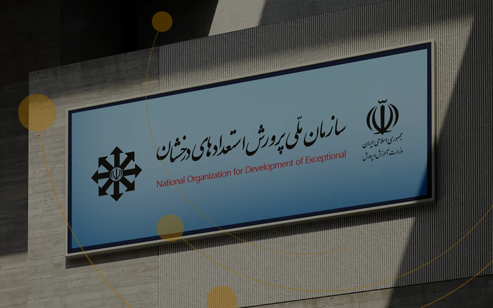

سمپاد، بستری برای شناسایی، پرورش و شکوفایی استعدادهای دانشآموزان؛
جایی که دانش، تفکر، خلاقیت و مسئولیتپذیری در کنار یکدیگر معنا پیدا
میکنند.
یادگیری در این مسیر تنها به آموختن مفاهیم درسی محدود نیست؛ بلکه فرصتی
برای پرسیدن، پژوهش کردن، تجربهاندوزی، حل مسائل و تبدیل ایدهها به
دستاوردهای ارزشمند است.
پرسشگری، نقطه آغاز کشف حقیقت است. با پژوهش و تفکر نقادانه، میآموزیم مسائل را عمیقتر بررسی کنیم، از چارچوب دانستههای خود فراتر برویم و به پاسخهایی تازه دست پیدا کنیم.
نوآوری از نگاه متفاوت به جهان پیرامون آغاز میشود. با پرورش خلاقیت، ایدههای تازه را شکل میدهیم و برای چالشهای پیش رو، راهحلهایی نوآورانه پیدا میکنیم.
رشد واقعی تنها در آموختن دانش خلاصه نمیشود. مهارتهایی مانند خودمدیریتی، تصمیمگیری، ارتباط مؤثر و کار گروهی، ما را برای حضور آگاهانه در جامعه آماده میکنند.
استعداد زمانی ارزشمندتر میشود که در مسیر پیشرفت جامعه به کار گرفته شود. میآموزیم دانش و تواناییهای خود را برای شناسایی مسائل و ساختن آیندهای بهتر به کار ببریم.